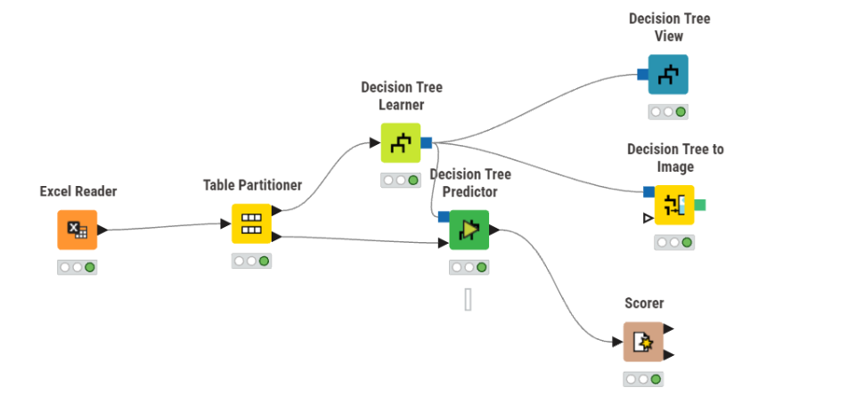
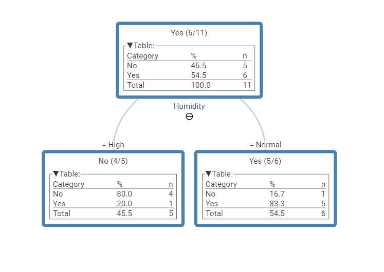
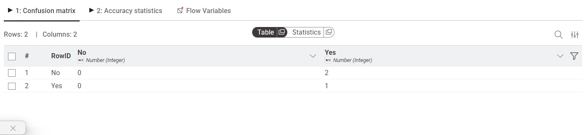

Pertemuan 11#
Dokumentasi Teknis: Implementasi Klasifikasi Decision Tree menggunakan KNIME Analytics Platform#
Dokumentasi ini menyajikan analisis mendalam mengenai alur kerja (workflow) pembelajaran mesin yang diimplementasikan pada platform KNIME. Fokus utama dari dokumentasi ini adalah penerapan algoritma Decision Tree untuk tugas klasifikasi, mencakup tahapan dari prapemrosesan hingga evaluasi performa model secara objektif.
1. Arsitektur Workflow Keseluruhan#
Workflow ini dibangun berdasarkan prinsip Supervised Learning yang memisahkan data menjadi subset pelatihan dan pengujian. Hal ini krusial untuk menjamin validitas model dan mendeteksi adanya indikasi overfitting. Alur data diproses secara linear guna memastikan integritas setiap transformasi data dari tahap mentah hingga menjadi informasi prediktif.

Keterangan: Seluruh node harus berada dalam status “Executed” (indikator lampu hijau) untuk memastikan validitas output.
2. Analisis Komponen dan Konfigurasi Teknis#
Berikut adalah perincian teknis mengenai fungsi dan konfigurasi setiap node yang digunakan dalam sistem:
2.1. Excel Reader (Ingesti Data)#
Fungsi: Bertanggung jawab atas ekstraksi data dari file sumber
Play_Tennis_Dataset.xlsx.Aspek Teknis: Node ini melakukan parsing terhadap struktur kolom. Penting untuk memastikan bahwa kolom target (misalnya:
Play Tennis) didefinisikan sebagai tipe String. Jika kolom target terdeteksi sebagai numerik, maka harus dilakukan konversi tipe data sebelum masuk ke tahap Learner.
2.2. Table Partitioner (Data Splitting)#
Fungsi: Memisahkan dataset menjadi dua subset independen: Training Set dan Testing Set.
Konfigurasi: Menggunakan rasio 80:20 (80% data dialirkan ke jalur atas untuk pelatihan, 20% ke jalur bawah untuk pengujian).
Metode: Disarankan menggunakan Stratified Sampling pada kolom target untuk menjaga distribusi proporsi kelas yang konsisten di kedua subset data.
2.3. Decision Tree Learner (Model Induction)#
Fungsi: Inti dari algoritma yang mempelajari pola hubungan antara atribut prediktor (Outlook, Temp, Humidity, Wind) dengan label target.
Logika Internal: Node ini menggunakan metrik Gini Index atau Information Gain untuk menentukan atribut pemisah yang paling optimal (split node).
Parameter: Batasan pada kedalaman pohon (Tree Depth) atau jumlah minimum catatan per node dapat diatur di sini untuk mengoptimalkan generalisasi model.
2.4. Decision Tree Predictor (Inference Phase)#
Fungsi: Menerapkan model pohon keputusan yang telah dihasilkan oleh Learner terhadap data pengujian yang belum pernah dilihat (unseen data).
Output: Menghasilkan kolom baru berisi prediksi kelas (misal:
Prediction (Play Tennis)).
2.5. Scorer (Model Evaluation)#
Fungsi: Melakukan audit performa model secara statistik.
Output: Menghasilkan Confusion Matrix yang merinci perbandingan antara observasi aktual dengan hasil prediksi model.
3. Visualisasi dan Interpretasi Struktur Pohon#
Visualisasi pohon keputusan memberikan transparansi terhadap logika klasifikasi (Model Explainability). Atribut yang terletak pada posisi paling atas (Root Node) merupakan variabel yang memiliki pengaruh paling signifikan dalam proses pengambilan keputusan.
(Akses melalui: Klik kanan pada Decision Tree View -> Interactive View)

4. Metrik Evaluasi Performa#
Kualitas model diukur menggunakan metrik akurasi untuk menentukan persentase prediksi yang tepat dari keseluruhan data pengujian.
Rumus Akurasi:#
Metrik ini memberikan gambaran objektif mengenai reliabilitas model dalam mengklasifikasikan data baru. Selain akurasi, perhatikan juga nilai Precision dan Recall pada tabel output Scorer untuk analisis yang lebih komprehensif.

5. Kesimpulan#
Implementasi ini membuktikan bahwa algoritma Decision Tree pada KNIME mampu mengidentifikasi pola tersembunyi dalam dataset secara efisien. Hasil visualisasi pohon memberikan wawasan kualitatif mengenai faktor dominan dalam klasifikasi, sementara node Scorer memberikan validasi kuantitatif terhadap akurasi prediksi model.